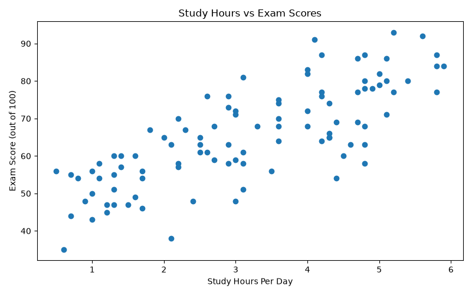
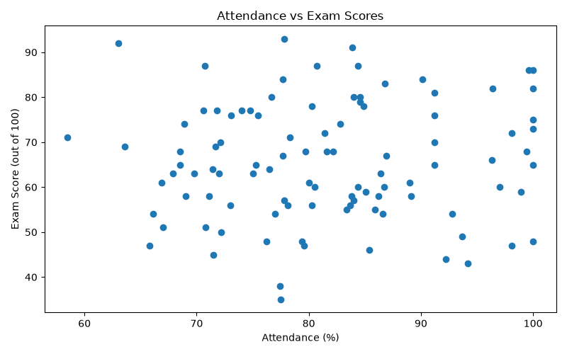
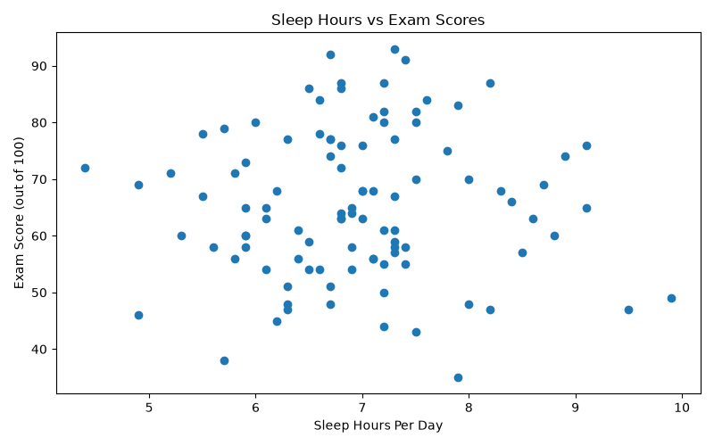

This project explores the relationship between students' daily study hours, attendance, sleep hours, and exam scores. Python was used to analyse the dataset, calculate correlations, create visualisations, and build an interactive dashboard.
The objective is to identify which of the three factors has the strongest linear relationship with exam scores and investigate whether the initial expectations are supported by the data.
The dataset contains the following variables:
| Variable | Description |
|---|---|
| Student ID | Unique identifier for each student |
| Study Hours Per Day | Number of hours spent studying daily |
| Attendance Percent | Student attendance percentage |
| Sleep Hours Per Day | Number of hours slept daily |
| Exam Score Out of 100 | Student's exam score |
Note: This is synthetic practice data and does not represent real students.
Hypothesis 1: Study Hours
Students who spend more hours studying per day tend to achieve higher exam scores.
Hypothesis 2: Attendance
Students with higher attendance percentages are expected to achieve higher exam scores.
Hypothesis 3: Sleep Hours
Students who sleep for more hours per day may have different exam scores.
These are exploratory expectations, not established facts. The analysis investigates whether the observed data supports them.
The dataset was loaded and analysed using Python and Pandas. Correlation coefficients were calculated to measure the direction and strength of the linear relationships between the three variables and exam scores.
Correlation coefficients range from -1 to +1:
Scatter plots were created to inspect the relationships visually. An interactive Streamlit dashboard was also developed to explore the data.
The analysis produced the following correlation values:
| Variable | Correlation with Exam Score | Interpretation |
|---|---|---|
| Study Hours Per Day | 0.772 | Strong positive linear relationship |
| Attendance Percent | 0.051 | Almost no linear relationship |
| Sleep Hours Per Day | 0.002 | Almost no linear relationship |
The correlation between daily study hours and exam scores was 0.772. This indicates a strong positive linear relationship in the synthetic dataset.
The study-hours scatter plot provides visual evidence for this pattern. Among the three variables examined, study hours had the strongest observed linear association with exam scores.
This finding supports Hypothesis 1 within this dataset. However, it does not establish that increasing study hours will automatically cause higher scores.
An initially promising expectation was that students with higher attendance would also have higher exam scores.
However, the observed correlation was only 0.051, which is very close to zero. The analysis therefore did not find a meaningful linear relationship between attendance and exam scores in this dataset.
This result does not support Hypothesis 2 in the expected direction. It does not prove that attendance is unimportant in real educational settings.
The correlation between sleep hours and exam scores was 0.002, which is approximately zero.
This means the analysis found almost no linear relationship between sleep duration and exam scores in this synthetic dataset. It does not establish that sleep has no effect on students' academic performance.
The following charts were generated during the analysis.

This chart helps examine whether exam scores tend to increase as daily study hours increase.

This chart helps inspect whether students with higher attendance tend to achieve higher exam scores.

This chart helps inspect the relationship between daily sleep duration and exam scores.
Chart interpretation: Each chart should display a descriptive title, clearly labelled horizontal and vertical axes, and appropriate units. The chart images should be saved in the same folder as this Markdown report so the relative image links work.
The strongest finding in this analysis is that study hours had a much stronger positive linear relationship with exam scores than attendance or sleep hours in this dataset.
The study-hours correlation was 0.772, compared with 0.051 for attendance and 0.002 for sleep hours. The initial expectation that higher attendance would correspond to higher scores was not supported by the observed correlation.
A stakeholder should interpret these results as an exploratory finding from a practice dataset, not as evidence for making real student assessment or education policy decisions.
This exploratory analysis examined the relationships between study hours, attendance, sleep hours, and exam scores.
Study hours showed the strongest positive linear relationship with exam scores, with a correlation of 0.772. Attendance and sleep hours showed almost no linear relationship with exam scores in this dataset.
The analysis demonstrates how exploratory data analysis can test initial expectations, identify patterns, and communicate findings using statistical measures and charts. Further analysis using reliable real-world data would be necessary before drawing conclusions about actual students.
Student_Performance_Analysis_Dataset.csv — dataset used for analysisanalysis.py — Python analysis and visualisation scriptdashboard.py — interactive Streamlit dashboardanalysis_summary.txt — summary of the correlation resultsstudy_hours_vs_scores.png — study-hours scatter plotattendance_vs_scores.png — attendance scatter plotsleep_hours_vs_scores.png — sleep-hours scatter plot